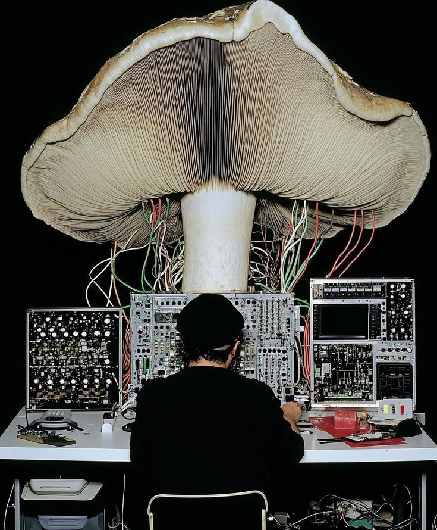
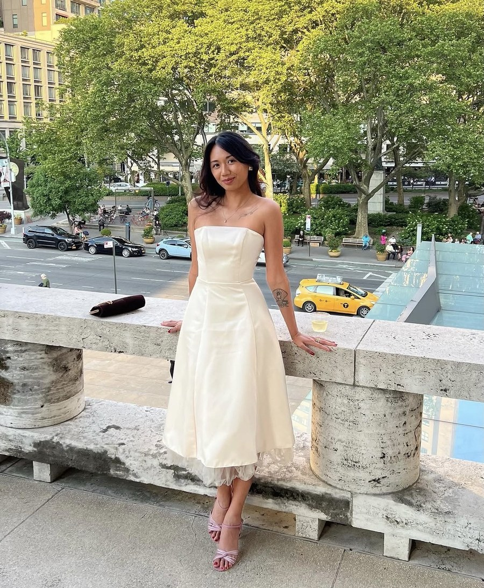

(intro)
Self-initiated brand analyses — what's working, what isn't, the underlying choice. Labelled SPEC because no one paid me to write them.
A 38-property ultra-luxury hotel group that has never run a traditional advertising campaign — yet 30-40% of bookings are repeat customers. A teardown of how the absence of marketing built the most loyal repeat base in luxury hospitality.
View project →A red-velvet Paris hotel that became more famous for its music compilations than for its rooms. A study in how a single perfectly-controlled secondary medium — a CD series — outshone the product it was meant to advertise.
View project →A fragrance house that makes you wait while your bottle is hand-blended in front of you, then prints your name on the label. A case for friction as luxury — when slowness is the differentiator in a category obsessed with speed.
View project →A direct-to-consumer fine jewelry brand that broke a hundred years of "the man buys it for the woman" marketing. A messaging audit on the single linguistic shift — from object given to object chosen for yourself — that unlocked a demographic the legacy houses ignored.
View project →Two celebrities widely dismissed as nepotism candidates built the most respected quiet-luxury house in American fashion in under two decades. A case that quiet luxury isn't an aesthetic — it's an operational discipline of saying no to every revenue-accelerating shortcut.
View project →
I'm Salmera — a writer, researcher, and builder trained in philosophy at Drexel and Southern Connecticut. I run two publications on Substack and work across policy research and nonprofit communications.
Studio Salmera is the creative half of that practice. A small studio applying an instinct for narrative — and an eye for image — to brands, fashion houses, and culture-first ventures. Working in AI-native production with the discipline of a magazine.
Based in New York & the Philippines — working anywhere.
Let's talk
hello@salmera.onlineAlternatively, reach me on Substack.